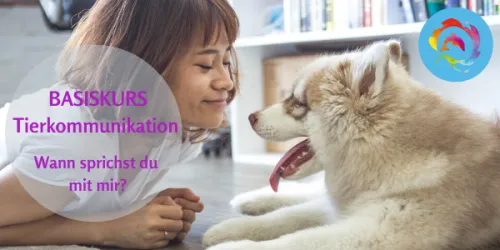
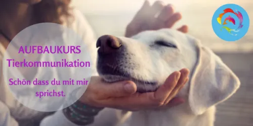
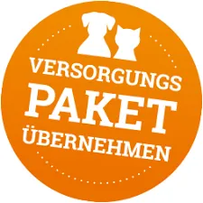

KATZENLIFECOACH® Onlinekurs
Produktprofil · Marktplatz-Daten 2026-10-10 · Verkaufsseiten-Recherche 2026-10-09 · Kategorien: Animals & Pets, Education, Family & Children
- KATZENLIFECOACH® Onlinekurs ist ein/e Mitgliederbereich & Videokurs in Animals & Pets und Education, vertrieben über den Digistore24-Marktplatz von Anbieter aCATemy-Katzenschule-Petra-Ott, gelistet seit 2026-08-31.
- Listenpreis $468.02; Digistore24 meldet — Checkout-Konversion, — Stornierungsquote und 20 % Affiliate-Provision.
- Verdienst pro Verkauf (Affiliate): $93.60 (Anbieter-seitige Statistik, keine Prognose).
Interesse an KATZENLIFECOACH® Onlinekurs? Aktueller Preis, Boni und Garantiebedingungen finden Sie auf der offiziellen Seite des Anbieters:
Offizielle Verkaufsseite ansehen
Affiliate-Link (Werbung) — wir verdienen ggf. eine Provision, ohne Mehrkosten für Sie.

Marktplatz-Daten
| Produkttyp | Mitgliederbereich & Videokurs |
|---|---|
| Preis | $468.02 (Single payment, Installment) |
| Affiliate-Provision | 20 % |
| Garantie/Rückgabe | Laut Verkaufsseite des Anbieters — vor dem Kauf auf der offiziellen Seite prüfen |
| Anbieter | aCATemy-Katzenschule-Petra-Ott (gelistet seit 2026-08-31) |
| Marktplatz-Statistiken* | Checkout-Konversion — · Stornoquote — · Verdienst/Verkauf $93.60 |
* Anbieter-seitige Statistiken von Digistore24; sie hängen von der Traffic-Qualität ab und sind keine Prognose.
Marktplatz-Beschreibung des Anbieters
KATZENLIFECOACH® – Katzenkundenachweis Onlinekurs Eine umfangreiche Online-Ausbildung für alle, die ihre Liebe zu Katzen mit fundiertem Fachwissen verbinden und Katzen sowie ihre Menschen kompetent begleiten möchten. Im KATZENLIFECOACH® lernen Teilnehmer, Katzen ganzheitlich zu verstehen – von Verhalten, Körpersprache und Bedürfnissen bis hin zu körperlichen Zusammenhängen, die hinter auffälligem …
Von der Verkaufsseite des Anbieters
Seitentitel: KATZENLIFECOACH
Hauptüberschrift
Rückmeldungen unserer Kursteilnehmer
Abschnitts-Überschriften
- Weltweit leben heute rund 600 Millionen Katzen – mit steigender Tendenz
- Ausbildung zum zertifizierten KATZENLIFECOACH® mit Tierschutzkennzeichen
- Das umfassendste Onlineprogramm für KATZENLIFECOACHES - Katzenfamilienberater
- Lerninhalte Umfassende Ausbildung
- Nach dem KATZENLIFECOACH® Onlinekurs kannst du:
- Für wen ist der KATZENLIFECOACH® geeignet?
- Warum dieser Kurs einzigartig ist
- Dein nächster Schritt
- So läuft dein Lernweg ab
- Werde jetzt KATZENLIFECOACH®
Einstiegstext
Mit dieser Entwicklung wächst auch der Informations- und Beratungsbedarf vieler Katzenhalter: von artgerechter Haltung über Ernährung bis hin zu Körpersprache und Kommunikation der Katze.
Die Katze ist weltweit das beliebteste Haustier – dennoch gibt es im Vergleich zu Hunden deutlich weniger professionelle Ansprechpartner. Dabei wünschen sich viele Katzenhalter kompetente Begleitung, um ihre Katze verantwortungsvoll, stressfrei und artgerecht zu umsorgen.
Leider gibt es aber auch sehr viele verhaltensauffällige Katzen und es werden immer mehr. Durch nicht artgerechte Haltung anstehen auch Verhaltensprobleme.
Diese Ausbildung vermittelt Dir das fundierte Know-how, um Katzenhalter professionell zu unterstützen und zu coachen. Du lernst, Menschen dabei zu begleiten, ihre Katzen besser zu verstehen und ihnen ein glückliches, ausgeglichenes Leben zu ermöglichen.
CTA-Buttons: „Starte jetzt - werde KATZENLIFECOACH®"
Recherche-Methode: rohes HTML · 1340 Wörter · Qualität: rich · recherchiert am 2026-10-09. Vollständige Recherche-Datei (MD) ↗
Anwendung — laut Anbieter
Wenn du Katzen nicht nur liebst, sondern ihnen auch wirklich weiter helfen möchtest – dann ist der KATZENLIFECOACH® dein nächster Schritt.
Ja, absolut. Der KATZENLIFECOACH® ist so aufgebaut, dass kein Vorwissen nötig ist. Alle Inhalte werden leicht verständlich erklärt – praxisnah, Schritt für Schritt. Gleichzeitig ist der Kurs auch für angehende Berater und Fachpersonal wertvoll.
Weitere Bilder (von der Verkaufsseite des Anbieters)
Bilder stammen von der offiziellen Verkaufsseite des Anbieters und zeigen das Produkt, wie es beworben wird.
Gut zu wissen
- Hoher Preis: $468.02 ist eine erhebliche Ausgabe — prüfen Sie, ob es einen Zahlungsplan gibt, und vergleichen Sie zuerst die günstigeren Alternativen der Kategorie.
- Keine Garantie-Formulierung in unserer Recherche gefunden — bestätigen Sie das Rückgabefenster auf der offiziellen Seite, bevor Sie kaufen.
- Hinweise der Verkaufsseite (wörtlich, nicht von uns geprüft): „Wichtige rechtliche Aspekte und Beratungsethik für angehende Katzen-Coaches."
- Hinweise der Verkaufsseite (wörtlich, nicht von uns geprüft): „Hier findest du ehrliche Antworten auf die wichtigsten Fragen, die sich viele Katzenhalter vor dem Start stellen."
- Marktplatz-Zahlen (Preis, Provision, Konversion, Stornoquote) — Quelle: offizielle Digistore24-Marktplatz-API (Affiliate-Sicht), Stand 2026-10-10. Gegenprüfung: Marktplatz-Suche nach Produkt-ID 677027.
- Verkaufsseiten-Zitate — Quelle: https://acatemy-katzen.app.mentortools.com/katzenlifecoach, abgerufen 2026-10-09 (Methode: rohes HTML). Verify: offizielle Seite öffnen.
- Garantie / Rückgabe — vom Anbieter festgelegt; vor dem Kauf auf der Verkaufsseite bestätigen.
- Nicht von uns geprüft: Produktqualität, Ergebnisse, Testimonials — kein Praxistest für dieses Listing durchgeführt.
Häufige Fragen zu KATZENLIFECOACH® Onlinekurs
Antworten aus dem Marktplatz-Snapshot (2026-10-10) und der Verkaufsseiten-Recherche (2026-10-09); Anbieteraussagen sind inline gekennzeichnet.
Was ist KATZENLIFECOACH® Onlinekurs?
KATZENLIFECOACH® Onlinekurs ist ein Angebot des Typs „Mitgliederbereich & Videokurs" im Digistore24-Marktplatz, Anbieter: aCATemy-Katzenschule-Petra-Ott, gelistet seit 2026-08-31. Eingepflegt unter Tiere & Haustiere und Bildung. Digistore24 wickelt Checkout, Lieferung und Rückgaben ab.
Wie viel kostet KATZENLIFECOACH® Onlinekurs?
Der Digistore24-Marktplatz listet es für $468.02 (single payment, installment). Preise legt der Anbieter fest und können sich ändern — der Marktplatz-Eintrag oben zeigt den Schnappschuss; die offizielle Verkaufsseite zeigt den aktuellen Preis.
Gibt es eine Geld-zurück-Garantie für KATZENLIFECOACH® Onlinekurs?
Unsere Verkaufsseiten-Recherche hat keine explizite Garantie-Formulierung gefunden. Viele Digistore24-Produkte bieten 60 Tage Geld-zurück, aber das legt jeder Anbieter selbst fest — bestätigen Sie es auf der offiziellen Verkaufsseite, bevor Sie kaufen.
Ist KATZENLIFECOACH® Onlinekurs seriös?
Wir bewerten keine Seriosität — wir veröffentlichen überprüfbare Zahlen: Anbieter aCATemy-Katzenschule-Petra-Ott (gelistet seit 2026-08-31), Checkout-Konversion —, Stornoquote —, Affiliate-Verdienst/Verkauf $93.60 (alles Anbieter-seitige Marktplatz-Statistiken). Lesen Sie unsere 6-Punkte-Bewertungsmethode und entscheiden Sie anhand der Zahlen — oder diskutieren Sie KATZENLIFECOACH® Onlinekurs auf GitHub.
Wo kann ich KATZENLIFECOACH® Onlinekurs sicher kaufen?
Nur über die offizielle Verkaufsseite, die auf dieser Seite verlinkt ist (Checkout und Rückgaben laufen über Digistore24). Prüfen Sie dort Preis und Garantie vor der Bestellung. Der Link ist ein Affiliate-Link — der Kauf unterstützt diese Website ohne Mehrkosten für Sie.
Wie erhalte ich KATZENLIFECOACH® Onlinekurs nach der Zahlung?
Der Checkout läuft über Digistore24: Nach der Zahlung erhalten Sie Ihren Zugang oder Download per E-Mail und in Ihrem Digistore24-Kundenkonto. Lieferdetails für diesen Produkttyp: Videokurse laufen über einen Mitgliederbereich: nach dem Checkout erhalten Sie Zugangsdaten per E-Mail und können die Lektionen in Ihrem eigenen Tempo streamen. Bei Problemen kann der Digistore24-Käufersupport Ihre Bestellung wiederherstellen.
Ähnliche Angebote in Tiere & Haustiere

BAUCH, BEINE, PO – das Trainingsprogramm für dein Freizeitpferd In nur 8 Wochen Muskulatur, Balance & Tragkraft aufbauen, für ein gesundes, motiviertes Pfer

Zertifizierter Katzenverhaltensberater / Katzencoach – Fernlehrgang der aCATemy® Bewirb eine professionelle Online-Ausbildung für alle, die Katzenverhalten fund

Diese Schulung ist hilft Haltern von Herdenschutzhunde in Familienhand, ein glückliches und harmonischen Zusammenleben zu ermöglichen. Empfehlen Sie das einziga

So wird aus Lesen echte Hilfe vor Ort! Im Guide erfahren Sie: Warum Tierschutz heute wichtiger ist den je Was wirklich im Tierschutzalltag so passiert Die 5 grö
Weitere Angebote von aCATemy-Katzenschule-Petra-Ott
Zertifizierter Katzenverhaltensberater / Katzencoach – Fernlehrgang der aCATemy® Bewirb eine professionelle Online-Ausbildung für alle, die Katzenverhalten fund

CARE4CATS® – Katzenkrankheiten · Erste Hilfe · Entspannt zum Tierarzt Ein umfangreicher Onlinekurs für Katzenhalter, die im Alltag und im Notfall mehr Sicherhei
Vergesellschaftung von Hund & Katze Ein ideales Online-Trainingsprogramm für alle Tierhalter, bei denen Hund und Katze künftig gemeinsam leben sollenoder di
KATZENLIFECOACH® Onlinekurs ist auch gelistet in
Bildung (599 Produkte) · Familie & Kinder (268 Produkte)
Ähnliche Preislage in Tiere & Haustiere

Schritt für Schritt die nonverbale Kommunikation mit Tieren erlernen.Online Kurs - Tierakademie Es sind KEINE Vorkenntnisse notwendig. Du kannst JEDERZEIT einst

Aufbaukurs 1 Tierkommunikation - Erweitere dein Wissen Du möchtest noch mehr über die Tierkommunikation erfahren und dein Wissen erweitern und vertiefen? Du möc

So wird aus Lesen echte Hilfe vor Ort! Im Guide erfahren Sie: Warum Tierschutz heute wichtiger ist den je Was wirklich im Tierschutzalltag so passiert Die 5 grö

Diese Schulung ist dazu da, dass neue bzw. adoptierte Hunde richtig integriert, behandelt, erzogen und verstanden werden. Sodass Ihr neues Zuhause ein dauerhaft
Ähnliche Suchanfragen
Wo Sie es sich ansehen können
Wo Sie es sich ansehen können
Aktuelle Preise, Garantie und Boni finden Sie auf der offiziellen Verkaufsseite:
Offizielle Verkaufsseite ansehen
Das ist ein Affiliate-Link (Werbung) — kaufen Sie darüber, verdienen wir ggf. eine Provision, ohne Mehrkosten für Sie.
Quellen & weiterführende Informationen
- Offizielle Verkaufsseite (aktueller Preis, Garantie, Boni): acatemy-katzen.app.mentortools.com/katzenlifecoach (Affiliate-Link)
- Öffentliche Digistore24-Produktseite: digistore24.com/product/677027
- Vollständige Recherche-Datei (Markdown, versioniert): content/products/58793-katzenlifecoach-onlinekurs.md
- Affiliate-Supportseite des Anbieters: acatemy-katzen.app.mentortools.com/acatemy-affiliate-support
- Marktplatz-Kategorie: Tiere & Haustiere
Wie wir Produkte wie KATZENLIFECOACH® Onlinekurs bewerten
Sechs Prüfungen, ausschließlich mit offiziellen Marktplatz-Zahlen. Die vollständige Bewertungsmethode lesen · unsere Recherche-Standards & Kennzeichnung.
Fragen oder eigene Erfahrungen mit KATZENLIFECOACH® Onlinekurs?
Praxis-Tests veröffentlichen wir erst, nachdem wir ein Produkt selbst gekauft haben — aber Ihre Erfahrung hilft anderen Lesern: Diskussion zu KATZENLIFECOACH® Onlinekurs auf GitHub starten/verfolgen. Falsche Zahl gefunden? Korrektur melden — jede Seite zeigt ihre Datenstände, Korrekturen gelten für die ganze Website.